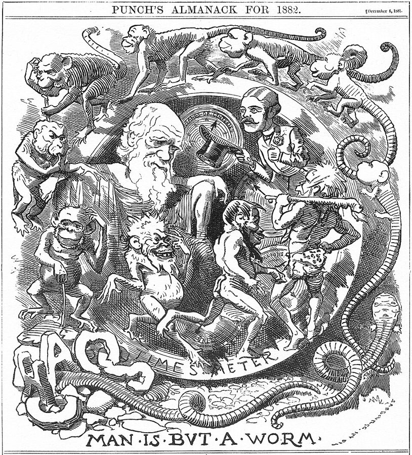
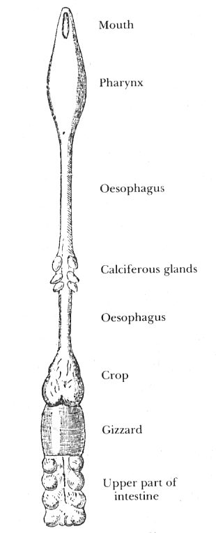
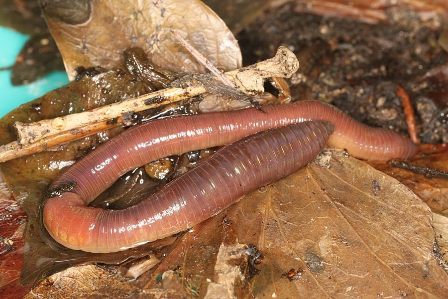
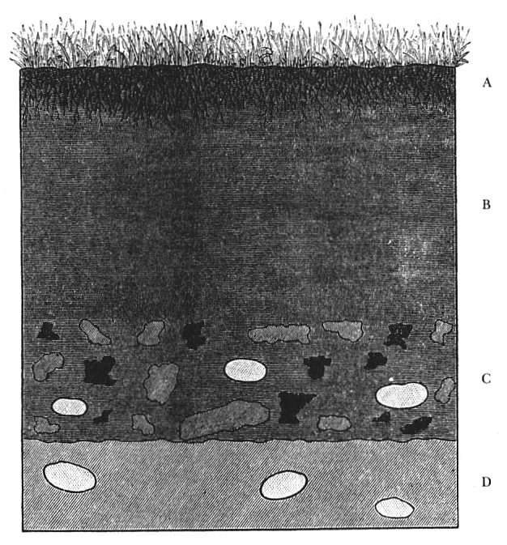
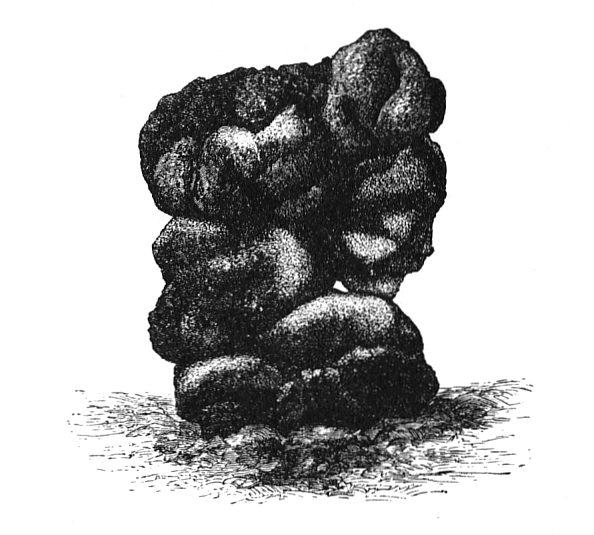
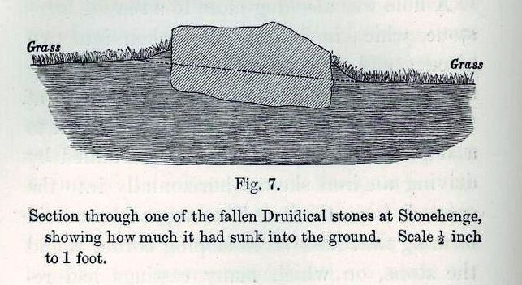
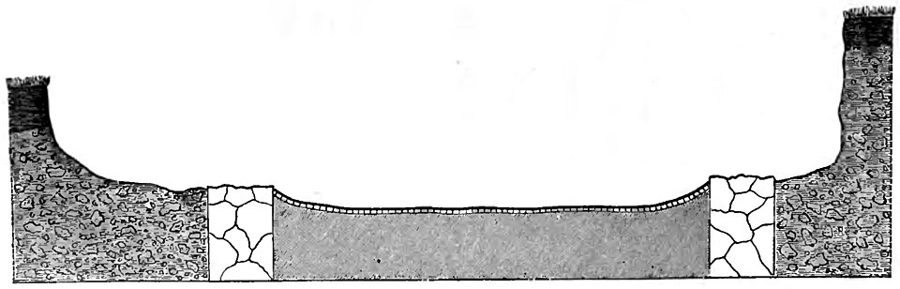

这本书是什么
《腐殖土的形成》（The Formation of Vegetable Mould through the Action of Worms，副标题「兼论蚯蚓的习性」），1881 年 10 月 10 日出版，是达尔文生前的最后一本书，半年后（1882 年 4 月）他去世。1837 年他在伦敦地质学会宣读过一篇短论文：撒在草地上的石灰、煤渣几年后埋到了草皮下面，是蚯蚓把细土翻上来盖住的。四十多年后他把这件事写成一本书：前两章讲蚯蚓的感官、食性和「智力」，后五章量蚯蚓翻上来多少土、怎样埋掉石头和罗马遗址、怎样参与地貌的剥蚀。据 Darwin Online 的介绍，这本书一年里卖了约六千本，起初比《物种起源》卖得还快。

七章地图
原书是引言加七章，每章开头有一段要点目录。粗体是本站的译名，斜体是原书的章名，后面是这一章讲什么、最值得看的一个实验或数字。正文用的是 Gutenberg 上的公有领域文本，词数是本站数的，取整到百。
- ·引言约 1000 词Introduction为什么写：1837 年的论文、书房里的几盆蚯蚓。回答 1869 年 Fish 的反驳：说蚯蚓太弱小，是不会把反复的小原因累加起来。
- 第 1 章 蚯蚓的习性约 8800 词Habits of Worms感官实验：灯、烧红的火钳、哨子、巴松管、钢琴。食性：最爱生脂肪，会吃同类；叶子在嘴外就先被消化了一部分。
- 第 2 章 蚯蚓的习性（续）约 14200 词Habits of Worms—continued全书最长。用叶子堵洞口：227 片叶子 80% 从叶尖拖进去，303 片纸三角 62% 从尖端；由此推出「某种程度的智力」。
- 第 3 章 蚯蚓翻上地面的细土有多少约 8800 词The Amount of Fine Earth Brought up by Worms to the Surface撒在草地上的碎白垩 29 年埋到 7 英寸深；收一年的蚯蚓粪称重，折合每英亩每年 7.56 到 18.12 吨。
- 第 4 章 蚯蚓和古建筑的掩埋约 9200 词The Part which Worms have Played in the Burial of Ancient BuildingsAbinger、Beaulieu、Chedworth、Brading、锡尔切斯特、Wroxeter：镶嵌地面中间塌陷，墙缝的灰浆里也有蚯蚓。
- 第 5 章 蚯蚓和陆地的剥蚀约 5200 词The Action of Worms in the Denudation of the Land腐殖酸分解岩石，砂囊里的小石子当磨盘；算下来全英国一百万年要有 320 万亿吨土穿过蚯蚓的身体。
- 第 6 章 陆地的剥蚀（续）约 8700 词The Denudation of the Land—continued雨后蚯蚓粪顺坡流下，坡下的土约是坡上的两倍；西南风把它吹向东北；古冢变矮，犁沟变浅。
- 第 7 章 结论约 1700 词Conclusion把前六章收拢：每英亩每年十吨多土过腹，考古学家该感谢蚯蚓，蚯蚓像园丁；最后是那段有名的末段。
达尔文做了哪些实验
按主题讲，不按章的顺序。数字一律照原书，括号里是出处的章；英寸、英亩是原书的单位，必要时折算。书里的插图来自维基共享资源上的 1881 年版扫描。
蚯蚓的感官：灯、火钳和钢琴（第 1 章）
蚯蚓没有眼睛，起初达尔文以为它们对光毫无感觉。他晚上在书房里观察花盆里的蚯蚓：用罩着红、蓝玻璃的提灯照，没有反应；用蜡烛、煤油灯照，大约十二次里有一次立刻缩回洞里；用透镜把烛光聚到头端，多半立刻缩回，照身体别处则不起作用。热也试过：把烧到暗红的火钳凑近五条蚯蚓，一条不理，其余几条缩回去，一条比一条快；他判断它们对辐射热不如对强光敏感。最有意思的是一个例外：蚯蚓正在拖叶子、吃东西时，连聚焦的光也不理。达尔文拿高等动物作比：注意力被别的事占住，就会忽略别的刺激，「而注意意味着有某种心智」。他承认这个比较「也许显得牵强」，但说看不出有什么理由怀疑它。
听觉的实验最有名：在旁边吹金属哨子、吹巴松管最低最响的音、对着它们喊、放在钢琴边上使劲弹，蚯蚓都不理；可是连盆放到钢琴上面，一敲低音 C，就立刻缩回洞里（原文见下面「原文选读」）。结论是：蚯蚓是聋的，却对固体传来的振动极其敏感。嗅觉很弱，对烟草、香水几乎没有反应，但埋在土下的卷心菜和洋葱九次都被找到了。味觉有偏好：几种叶子一起给，胡萝卜和野樱桃的叶子最受欢迎。它们是杂食的，最爱生脂肪，还会把同类的尸体拖进洞里啃。

蚯蚓有没有一点智力：叶子和三角纸片（第 2 章）
蚯蚓晚上会把叶子、叶柄、羽毛、纸片拖进洞口把洞堵上，没有叶子就堆小石子（一位女士清掉石堆后观察，四个晚上后一个洞口堆了 34 块）。堵洞是本能，但达尔文问：拖哪一头？他的推理是：如果是偶然，拖叶尖、叶基、中间的比例应该没有规律；如果是固定的本能，所有叶子都该同一个拖法；而英国本来没有的外来植物，它们的祖先不可能留下本能。他从洞里拔出 227 片枯叶：181 片（80%）是从叶尖拖进去的，20 片（9%）从叶基，26 片（11%）从中间。杜鹃花（外来植物）的落叶多半叶基比叶尖窄，他儿子找到的 91 片里 66% 从叶基拖入；两根针连在基部的松针，几乎全从基部拖入。
他又用书写纸剪了两种细长的三角形（抹上生脂肪，免得夜里被露水泡软），撒在洞口附近。照纸面面积算，偶然被抓住的多半该是底边那一头；结果 303 片里，62% 从尖端拖进去，15% 从中间，23% 从底边。从尖端拖入的纸片，底边多半干净、没有折痕，说明蚯蚓并不是先试底边、失败了再换。于是只剩一种解释：蚯蚓「有某种程度的智力」。他紧接着说，这「会让每个人觉得非常不可能」。同一章里他也记下一个解释不了的结果：把松针的尖粘住或用线捆住，仍有 85% 从基部拖入，「基部一定有什么吸引蚯蚓的东西」。

蚯蚓翻上来多少土（第 3 章）
他用两种办法量。第一种看东西埋得多快：1842 年 12 月 20 日，他在家附近一块至少三十年没犁过的草地上撒了一层碎白垩，1871 年 11 月挖沟，白垩块排成一条白线，埋在 7 英寸（约 18 厘米）深处，平均每年 0.22 英寸。Maer 那几块地（1837 年论文写过的）复查的结果也是每十年约 2 英寸。家里一条 1843 年铺的石板小路，到 1877 年掀开草皮，石板原样躺在一英寸细土下面。
第二种是直接称：一位住在 Leith Hill Place 的女士（书里没写名字）从 1870 年 10 月起，把两块一平方码地上一年里冒出的蚯蚓粪全部收起来烘干：一块 3½ 磅，折合每英亩每年 7.56 吨；另一块 7.453 磅，折合 16.1 吨。加上家附近白垩谷地（18.12 吨）和尼斯（14.58 吨）两例，均匀铺开大约是每年 0.2 英寸（约 5 毫米）一层。第 7 章的总结是：英格兰许多地方，每英亩每年有十吨多（10,516 公斤，约合每公顷 26 吨）干土穿过蚯蚓的身体，每过几年整层腐殖土就被翻一遍。至于有多少蚯蚓，他引德国人 Hensen 的估算：每英亩 53,767 条，但提醒这是按菜园算的，麦田大约只有一半。


石头和古迹怎样沉下去（第 3、4 章）
道理是这样的：大石头底下凹的地方先被蚯蚓粪填满，接着蚯蚓把土排到石头四周，地面就围着石头隆起；石头正下方的洞穴日久塌陷，石头就一点点往下沉。萨里郡 Leith Hill Place 附近，一座石灰窑 35 年前拆掉，留下几块大砂岩，其中一块沉了约 1½ 英寸，照这个速度要 247 年才沉到和田面一样平（原文见下面「原文选读」）。巨石阵几块倒下的巨石也一样：一块 17 英尺长的，底部在周围地面以下 9½ 英寸，四周是隆起的草皮，上面有新鲜的蚯蚓粪。第 2 章还提到，他的儿子 Horace 在田里放了一块大平石头测它的升降：天干的五六月沉了 3.33 毫米，九月多雨时升了 1.91 毫米。


第 4 章把同样的道理用到罗马遗址上。1877 年 8 月 20 日萨里郡的 Abinger 开挖一座罗马别墅（出土钱币从公元 133 到 361 年），达尔文在场。清出来的混凝土地面看上去完好，第二天早上却有 7 个洞口顶起了小土饼，第三天 25 个；Abinger Hall 的 Farrer 替他记了七个星期，到 10 月 13 日数到 61 个，墙上的灰浆里也有洞。锡尔切斯特的发掘者乔伊斯牧师给他寄来剖面图：房间的镶嵌地面靠墙处不动，中间塌下去 5¾ 英寸，一条走廊塌了 7¾ 英寸；一堵墙的中间、田面以下 49½ 英寸处还挖出一条活蚯蚓。这一章的结论很有分寸：蚯蚓在这些遗址的掩埋上起了「相当大的作用」，坡上冲下来的土和落尘也帮了大忙；地面下沉一部分是土地自身沉降，主要是被蚯蚓掏空。乔伊斯牧师的故事见达尔文篇 §4–§5。

蚯蚓和地貌：慢慢削平陆地（第 5、6 章）
这两章是全书最「地质」的部分。达尔文要回答一个难题：长满草、被草根缠住的缓坡，怎么会有土被搬走？答案还是蚯蚓。雨后新排出的蚯蚓粪是软的，会顺坡流下：他在平均坡度 9° 26′ 的地方剖开 11 堆，洞口以下的土平均 205 格令，以上只有 103 格令。由儿子 George 算出：这样的坡上，每年有 2.4 立方英寸土越过一码长的等高线，一百码就是 11½ 磅湿土，日积月累流进谷底，再被河水带进海里。大风雨还把软的蚯蚓粪往下风吹；英国多西南风，土就整体往东北方向挪。巨石阵附近两个古老的圆形浅沟里，东北侧的腐殖土确实比西南侧厚（2.29 英寸对 1.46 英寸），他说要更多测量才可靠。
化学和机械的作用也算进去了：消化半腐烂的叶子产生的酸能溶解岩石颗粒，砂囊里吞下的小石子把土粒互相磨细；罗马遗址上方的蚯蚓粪里，碎砖粒都被磨圆了。第 5 章最后算了一笔大账：每英亩每年十吨，乘以英格兰和苏格兰适合蚯蚓的三千二百多万英亩，再乘以地质上并不算长的一百万年，是 320 万亿吨土。
原文选读
达尔文 1882 年去世，这本书早已是公有领域，下面整段摆出原文，配本站的全译；省略处用 …。挑的是最能代表这本书的几段：他为什么写、几个实验、一段回忆、一个结论。全书的末段在达尔文篇 §3–§5 的「原典」里已经全文翻译，这里不重复。
引言 · 为什么写，和对一位批评者的回答
引言第 2 段和第 5 段。前一段说他起初想知道的不是土，而是蚯蚓有没有心智；后一段回应 1869 年的一位批评者，也说出了全书的方法。
As I was led to keep in my study during many months worms in pots filled with earth, I became interested in them, and wished to learn how far they acted consciously, and how much mental power they displayed. I was the more desirous to learn something on this head, as few observations of this kind have been made, as far as I know, on animals so low in the scale of organization and so poorly provided with sense-organs, as are earth-worms. … In the year 1869, Mr. Fish … rejected my conclusions with respect to the part which worms have played in the formation of vegetable mould, merely on account of their assumed incapacity to do so much work. He remarks that “considering their weakness and their size, the work they are represented to have accomplished is stupendous.” Here we have an instance of that inability to sum up the effects of a continually recurrent cause, which has often retarded the progress of science, as formerly in the case of geology, and more recently in that of the principle of evolution.
本站译：我因为在书房里用装土的花盆养了好几个月蚯蚓，对它们有了兴趣，想弄清它们的行动在多大程度上是有意识的，表现出多少心智能力。我格外想在这方面知道一点东西，因为据我所知，像蚯蚓这样在组织构造的阶梯上这么低、感觉器官又这么贫乏的动物，这类观察做得很少。……1869 年，Fish 先生否定了我关于蚯蚓在腐殖土形成中所起作用的结论，理由仅仅是认定它们没有能力干这么多活。他说：「考虑到它们的弱小和个头，人们说它们完成的工作简直是惊人的。」这里我们看到的，正是那种不会把一个不断重复的原因的效果累加起来的无能；它常常拖住科学的进步，从前在地质学上是这样，近来在进化原理上也是这样。
最后一句把蚯蚓、地质学和进化论放在同一个逻辑下：微小的作用乘以漫长的时间，见渐变论。引言里还提到另一位不信的人：法国地质学家 D'Archiac 说这是「奇特的理论」，达尔文回答他是凭「内省」而不是观察下的结论。
第 1 章 · 给蚯蚓弹钢琴
第 1 章「感官」一节。实验的妙处在对照：同样的琴声，隔着空气和隔着琴身、盆底、泥土传过去，结果完全不同。
Worms do not possess any sense of hearing. They took not the least notice of the shrill notes from a metal whistle, which was repeatedly sounded near them; nor did they of the deepest and loudest tones of a bassoon. They were indifferent to shouts, if care was taken that the breath did not strike them. When placed on a table close to the keys of a piano, which was played as loudly as possible, they remained perfectly quiet. Although they are indifferent to undulations in the air audible by us, they are extremely sensitive to vibrations in any solid object. When the pots containing two worms which had remained quite indifferent to the sound of the piano, were placed on this instrument, and the note C in the bass clef was struck, both instantly retreated into their burrows. After a time they emerged, and when G above the line in the treble clef was struck they again retreated.
本站译：蚯蚓没有任何听觉。在它们旁边一再吹响金属哨子的尖音，它们毫不理会；巴松管最低最响的音，它们也不理会。对着它们喊叫，只要留心别让气息吹到它们身上，它们也无动于衷。把它们放在桌上、紧挨着钢琴的琴键，琴弹得要多响有多响，它们仍然一动不动。它们虽然对我们听得见的空气波动无动于衷，对任何固体里的振动却极其敏感。那两条对琴声毫无反应的蚯蚓，连盆一起被放到钢琴上，一敲低音谱表的 C，两条都立刻缩回洞里。过了一会儿它们又出来，再敲高音谱表上方的 G，它们又缩了回去。
同一节接着说：有人一跺地，蚯蚓就爬出洞来，人们说它们以为鼹鼠来了；还有人见过一只养着的田凫用一条腿拍草皮，等蚯蚓爬出来就吃掉。
第 2 章 · 蚯蚓怎样堵洞口：「某种程度的智力」
第 2 章。前一句是他设计实验的思路：先想一个人会怎么做；后一段是全章的结论，中间隔着几百片叶子、叶柄和三角纸片的统计。
If a man had to plug up a small cylindrical hole, with such objects as leaves, petioles or twigs, he would drag or push them in by their pointed ends; but if these objects were very thin relatively to the size of the hole, he would probably insert some by their thicker or broader ends. The guide in his case would be intelligence. … To sum up, as chance does not determine the manner in which objects are drawn into the burrows, and as the existence of specialized instincts for each particular case cannot be admitted, the first and most natural supposition is that worms try all methods until they at last succeed; but many appearances are opposed to such a supposition. One alternative alone is left, namely, that worms, although standing low in the scale of organization, possess some degree of intelligence. This will strike every one as very improbable; but it may be doubted whether we know enough about the nervous system of the lower animals to justify our natural distrust of such a conclusion. With respect to the small size of the cerebral ganglia, we should remember what a mass of inherited knowledge, with some power of adapting means to an end, is crowded into the minute brain of a worker-ant.
本站译：如果一个人要用叶子、叶柄或小树枝这类东西堵住一个小圆洞，他会捏着尖的一头把它们拖进去或推进去；但如果这些东西比洞口细得多，他大概会把其中一些从粗的、宽的一头塞进去。在他，起引导作用的是智力。……归结起来：既然东西怎样被拖进洞里不是偶然决定的，又不能承认对每一种情形各有一种专门的本能，那么最初、也最自然的设想是：蚯蚓把各种办法都试一遍，直到最后成功；可是许多迹象和这个设想相反。剩下的只有一种可能：蚯蚓虽然在组织构造的阶梯上站得很低，却有某种程度的智力。人人都会觉得这非常不可能；可是，对低等动物的神经系统，我们是否知道得足够多，足以让我们对这种结论天然的不信任站得住，这本身就值得怀疑。至于它们的脑神经节很小，我们应当记得，一只工蚁微小的脑子里装着多大一堆遗传来的知识，外加一些为目的调整手段的能力。
结论的语气留足了余地：「某种程度的」「人人都会觉得这非常不可能」。他排除了三种解释（偶然、专门的本能、反复试错），接受剩下的一种。今天的看法见下面「今天怎么看」。
第 3 章 · 「石头地」
第 3 章，量土翻上来多快的一节。全书少见的一段回忆：自家的田，自家的孩子，三十年。
A field, which adjoins the one just described, slopes in one part rather steeply (viz., at from 10° to 15°); this part was last ploughed in 1841, was then harrowed and left to become pasture-land. For several years it was clothed with an extremely scant vegetation, and was so thickly covered with small and large flints (some of them half as large as a child’s head) that the field was always called by my sons “the stony field.” When they ran down the slope the stones clattered together, I remember doubting whether I should live to see these larger flints covered with vegetable mould and turf. But the smaller stones disappeared before many years had elapsed, as did every one of the larger ones after a time; so that after thirty years (1871) a horse could gallop over the compact turf from one end of the field to the other, and not strike a single stone with his shoes. To anyone who remembered the appearance of the field in 1842, the transformation was wonderful. This was certainly the work of the worms, for though castings were not frequent for several years, yet some were thrown up month after month, and these gradually increased in numbers as the pasture improved.
本站译：和上面说的那块地相邻的一块田，有一部分坡相当陡（10° 到 15°）；这一部分最后一次犁是在 1841 年，之后耙过，就留着让它变成牧场。好几年里地上的植物稀得不能再稀，满地大大小小的燧石（有些有半个孩子的脑袋那么大），我的几个儿子一直管它叫「石头地」。他们从坡上跑下来，石头咔啦咔啦地撞在一起；我记得那时我怀疑自己能不能活着看到这些大燧石被腐殖土和草皮盖住。可是没过几年，小石头就不见了，又过了一段时间，大石头也一块不剩；到了三十年后（1871 年），一匹马可以在紧实的草皮上从地这头跑到那头，蹄铁碰不到一块石头。凡是记得这块地 1842 年样子的人，都会觉得这变化了不起。这肯定是蚯蚓干的：头几年蚯蚓粪虽然不多，但每个月都有一些被排上来，随着牧草长好，数量也渐渐多了。
他接着挖沟实测：石子上面是 2½ 英寸不含石子的腐殖土，三十年平均每年只有 0.083 英寸，「起初一定慢得多，后来快得多」。
第 3 章 · 一块石头，三十五年，一英寸半
第 3 章「大石头怎样因蚯蚓而下沉」一节。上面的图 6 就是这块石头。中间省掉的是石头的尺寸和量法。
A lime-kiln formerly stood in a grass-field near Leith Hill Place in Surrey, and was pulled down 35 years before my visit; all the loose rubbish had been carted away, excepting three large stones of quartzose sandstone, which it was thought might hereafter be of some use. An old workman remembered that they had been left on a bare surface of broken bricks and mortar, close to the foundations of the kiln; but the whole surrounding surface is now covered with turf and mould. … The whole stone had sunk in the thirty-five years, as far as I could judge, about 1½ inch; and this must have been due to the brick-rubbish beneath the more protuberant parts having been undermined by worms. At this rate the upper surface of the stone, if it had been left undisturbed, would have sunk to the general level of the field in 247 years; but before this could have occurred, some earth would have been washed down by heavy rain from the castings on the raised border of turf over the upper surface of the stone.
本站译：萨里郡 Leith Hill Place 附近的一块草地上，从前有一座石灰窑，在我去看之前 35 年拆掉了；散碎的瓦砾都运走了，只剩三块石英质砂岩的大石头，当时以为以后也许用得着。一位老工人记得，它们被留在一片光秃的碎砖和灰浆上，紧挨着窑的地基；可现在周围整片地面都盖着草皮和腐殖土。……照我的判断，整块石头在这三十五年里沉下去约 1½ 英寸；这一定是因为石头凸出部分底下的碎砖被蚯蚓掏空了。照这个速度，要是一直没人动它，石头的上表面要 247 年才会沉到和田面一样平；不过在那之前，大雨会把石头四周隆起的草皮边上的蚯蚓粪冲下来一些，盖到石头上面。
另一块更大的石头沉了约 2 英寸，推算要 262 年。达尔文特意说明石头底下是沙土和碎砖，不是会被压陷的黏土：下沉不能归于石头的自重。
第 7 章 · 考古学家应当感激蚯蚓
第 7 章（结论）。Phillips 在达尔文篇第 36 段引了开头一句；后面几句他没有引：同一群蚯蚓既保存遗迹，也毁坏遗迹。
Archæologists ought to be grateful to worms, as they protect and preserve for an indefinitely long period every object, not liable to decay, which is dropped on the surface of the land, by burying it beneath their castings. Thus, also, many elegant and curious tesselated pavements and other ancient remains have been preserved; though no doubt the worms have in these cases been largely aided by earth washed and blown from the adjoining land, especially when cultivated. The old tesselated pavements have, however, often suffered by having subsided unequally from being unequally undermined by the worms. Even old massive walls may be undermined and subside; and no building is in this respect safe, unless the foundations lie 6 or 7 feet beneath the surface, at a depth at which worms cannot work. It is probable that many monoliths and some old walls have fallen down from having been undermined by worms.
本站译：考古学家应当感激蚯蚓：凡是掉在地面上、不易腐烂的东西，蚯蚓都用自己的粪把它埋起来，从而在无限长的时间里保护、保存它。许多精美奇特的镶嵌地面和别的古代遗存，也是这样保存下来的；当然，在这些情形里，从邻近土地（尤其是耕地）冲下来、吹过来的泥土无疑也帮了大忙。不过，古老的镶嵌地面也常常因为被蚯蚓掏空得不均匀，沉得高低不平而受损。连古老厚重的墙也可能被掏空而下沉；在这一点上，没有一座建筑是安全的，除非地基深入地下六七英尺，深到蚯蚓干不了活的地方。很可能有许多巨石和一些古墙，是因为被蚯蚓掏空才倒下的。
第 4 章开头说的是同一件事：考古学家大概不知道自己欠蚯蚓多少。例子是 Shrewsbury 附近一块草地翻耕时犁出的大批铁箭头，当地一位古物学家认为是 1403 年那场战役留下的。
第 7 章 · 蚯蚓像园丁
第 7 章。Phillips 在第 36 段引了第一句。原书在第一句中间有一个脚注，所以原文那里用 … 隔开。
Worms prepare the ground … in an excellent manner for the growth of fibrous-rooted plants and for seedlings of all kinds. They periodically expose the mould to the air, and sift it so that no stones larger than the particles which they can swallow are left in it. They mingle the whole intimately together, like a gardener who prepares fine soil for his choicest plants. In this state it is well fitted to retain moisture and to absorb all soluble substances, as well as for the process of nitrification. The bones of dead animals, the harder parts of insects, the shells of land-molluscs, leaves, twigs, &c., are before long all buried beneath the accumulated castings of worms, and are thus brought in a more or less decayed state within reach of the roots of plants.
本站译：蚯蚓把土地整治得极好，适合须根植物和各种幼苗生长。它们定期让腐殖土接触空气，又把它筛过，土里不留比它们吞得下的颗粒更大的石子。它们把一切细细拌匀，像一位园丁为他最心爱的植物备下细土。这样的土很能保持水分，吸收一切可溶的物质，也适于硝化作用。死去动物的骨头、昆虫的硬壳、陆生螺类的壳、叶子、小枝等等，不久都会被越积越厚的蚯蚓粪埋起来，于是在或多或少腐烂之后，被送到植物的根够得着的地方。
那个脚注提到 Gilbert White（《塞尔彭自然史》的作者）早就说过蚯蚓松土的好处。1837 年的论文说农夫犁地只是「粗笨地」模仿蚯蚓，这里换成了园丁，口气更亲切。
Phillips 怎么读它
Phillips 在达尔文篇的前半读 1837 年的论文，在后半读这本书。他从书里取的多是短语：蚯蚓力气多大、吞下多少土、会吃同类、「这么低等」却会堵洞口（散在第 1、2、4、5 章），考古学家该感谢蚯蚓、蚯蚓替种子备土（第 7 章），乔伊斯牧师和锡尔切斯特（第 4 章），以及末段和《物种起源》末段的对照。他从这些里读出一种道德：埋葬是为了更新，好处是碰巧的，最卑微的劳作维持着世界。书的大半他没有谈：感官实验、叶子和纸片的统计、称蚯蚓粪、第 5、6 章的剥蚀；蚯蚓的智力他点到了（第 37 段说它们「出人意料地聪明」，第 42 段提到堵洞口），但没有展开。他说乔伊斯是书里唯一难说服的人；引言里其实还有两位不信的人（D'Archiac 和 Fish），只是达尔文直接反驳，没写成被说服的故事。
今天怎么看
这一页的「作者」是达尔文。每一块摆出三样：今天的研究怎么看，达尔文怎么说，本站的评论。最后一句是本站对这本书的总体判断。
蚯蚓真有那么大的作用吗
主流看法：土壤学大体接受达尔文的方向。1994 年 Jones、Lawton 和 Shachak 在 Oikos 提出「生态系统工程师」，蚯蚓翻土是常举的例子。2014 年 van Groenigen 等人汇总 58 项研究：农田里有蚯蚓，作物平均增产约 25%，但氮肥充足时这个效应就消失了。反过来，北美北部的森林冰期后本没有蚯蚓，欧洲蚯蚓引入后吃掉落叶层，2016 年 Craven 等人的荟萃分析发现，引入的蚯蚓类群越多，林下植物多样性越低，原生植物的覆盖也随蚯蚓增多而减少。
达尔文的看法：蚯蚓在世界历史上的作用比大多数人起初设想的重要；每英亩每年十吨多土过腹（第 7 章）。他也说明冲刷、风吹和落尘一直在帮忙。
本站的评论：方向对，数字要当估算看：他自己的四个例子就从 7.56 吨到 18.12 吨。「有益」也看场合：同样的翻土，在原本没有蚯蚓的森林里是破坏。这正好接上 Phillips 说的「碰巧有益」。
蚯蚓有智力吗
主流看法：动物行为学承认蚯蚓能做简单的学习。1912 年 Yerkes 用 T 形迷宫训练蚯蚓，1970 年代有人认为那主要是化学趋性；2014 年 Wilson 等人在 PeerJ 报告，蚯蚓经过十几次训练就学会了逃避。但这是条件反射一类的学习，一般不说蚯蚓对物体的形状「有概念」。
达尔文的看法：堵洞的方式不是偶然，不是专门的本能，也不像反复试错，所以只剩「某种程度的智力」；他自己说，人人都会觉得这非常不可能（第 2 章）。
本站的评论：论证结构很漂亮：排除三种解释，接受剩下的一种。弱点是排除得不彻底：他自己的松针实验已经提示，蚯蚓也许是被基部的化学或触觉线索吸引，用不着「形状的概念」。本站没有查到用现代方法重做三角纸片实验的研究；这个结论读作一个大胆的假说更稳妥。
古迹真是蚯蚓埋的吗
主流看法：考古学把这个警告当真。1957 年 Atkinson（主持过巨石阵发掘的考古学家）在 Antiquity 发表《蚯蚓与风化》；1983 年 Stein 在 American Antiquity 讨论蚯蚓对考古地层的扰动，提醒剖面里有蚯蚓粪时解读要小心；2009 年 Christopher Evans 在 Antiquity 专文讨论这本书里达尔文的「考古学」。
达尔文的看法：遗迹的掩埋蚯蚓出了相当大的力，冲刷和落尘也出了大力；地面下沉主要是被掏空（第 4 章结论）。
本站的评论：这一章比人们印象里的谨慎：每个遗址他都列了别的原因，Wroxeter 那些地基很深、不会下沉的墙为什么也被土盖住，他承认很难解释。今天的考古学从他那里继承的，主要是一个方法上的提醒：地层不是封死的档案，地面上的小东西会沉下去、被搅动。
本站的总体看法：这本书最站得住的是方法：小原因乘以长时间，靠计数、称重、隔几十年再挖开来验证。「蚯蚓塑造表土」今天被土壤学接受，具体数字和「全然有益」要打折扣；「蚯蚓有智力」论证漂亮、证据不足。读 Phillips 时可以记住：他读出的道德建在这些扎实的测量上，测量本身却推不出道德。
精彩回顾
读过又忘了，从这里想起来。挑的是这本书最值得记住的实验、数字和段落，不按原书顺序；每条后面是出处的章。全书各页的这一节都收在全书回顾。
一句话：达尔文用四十多年的计数、称重和挖掘说明，最不起眼的蚯蚓年复一年翻动整层表土、埋下石头和古迹；这是他「小原因乘以长时间」的最后一次示范。
哨子、巴松管、喊叫、贴着琴键弹，蚯蚓都不理；连盆放到钢琴上，一敲低音 C，立刻缩回洞里。它们是聋的，却对固体的振动极敏感。
第 1 章303 片纸三角被拖进洞，62% 从尖端。达尔文排除偶然、本能和试错，得出「某种程度的智力」，又说人人都会觉得这不可能。
第 2 章1842 年满地燧石，孩子们跑下坡时石头咔啦响；三十年后，马在草皮上从这头跑到那头，蹄铁碰不到一块石头。
第 3 章英格兰许多地方，每英亩每年有十吨多干土穿过蚯蚓的身体，每过几年整层腐殖土就被翻一遍。
第 7 章锡尔切斯特一条走廊的镶嵌地面，两边贴着墙不动，中间塌下去 7¾ 英寸。达尔文说主要是蚯蚓掏空的。
第 4 章1869 年有人说蚯蚓太弱小，干不了这么多活。达尔文回答：这是不会把反复的小原因累加起来，地质学和进化论都吃过这个亏。
引言